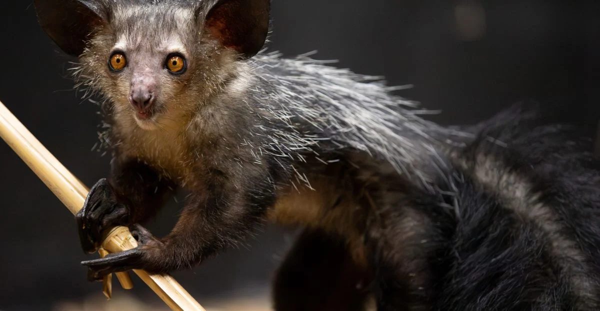
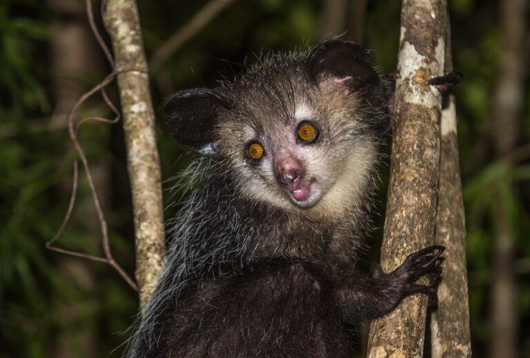
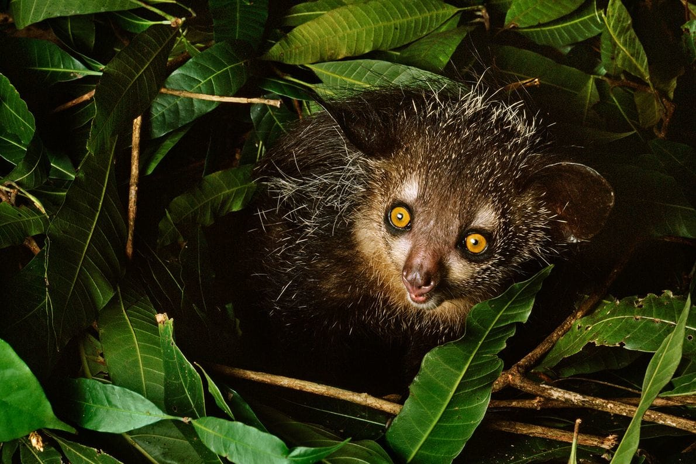
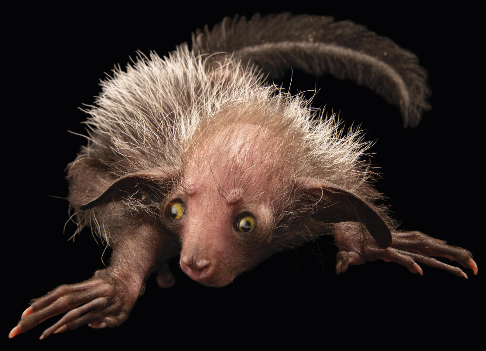
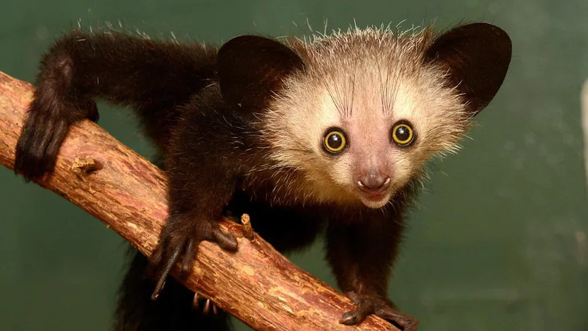

AYE AYE LEMMUR
-

is a long-fingered lemur, a strepsirrhine primate native to Madagascar with rodent-like teeth that perpetually grow and a special thin middle finger that they can use to catch grubs and larvae out of tree trunks.
-

The aye-aye is a nocturnal and arboreal animal meaning that it spends most of its life high in the trees. Although they are known to come down to the ground on occasion, aye-ayes sleep, eat, travel and mate in the trees and are most commonly found close to the canopy where there is plenty of cover from the dense foliage.
-

During the day, aye-ayes sleep in spherical nests in the forks of tree branches that are constructed out of leaves, branches and vines before emerging after dark to begin their hunt for food. Aye-aye are solitary animals that mark their large home range with scent. The smaller territories of females often overlap those of at least a couple of males. Male aye-ayes tend to share their territories with other males and are even known to share the same nests (although not at the same time), and can seemingly tolerate each other until they hear the call of a female that is looking for a mate.
-

Mating season extends throughout the year, with females typically starting to breed at the age of three or four. They give birth to one offspring every two to three years. During the period of parenting, a female becomes the dominant figure over males, likely to secure better access to food while caring for her young. The infant remains in a nest for up to two months before venturing out, but it takes another seven months before the young aye-aye can maneuver the canopy as skillfully as an adult
-

A full-grown aye-aye is typically about 60 centimetres (2 feet) long with a tail longer than its body. The species has an average head and body length of 36–43 cm (14–17 in) plus a tail of 56–61 cm (22–24 in), and weighs around 2 kilograms (4 pounds).